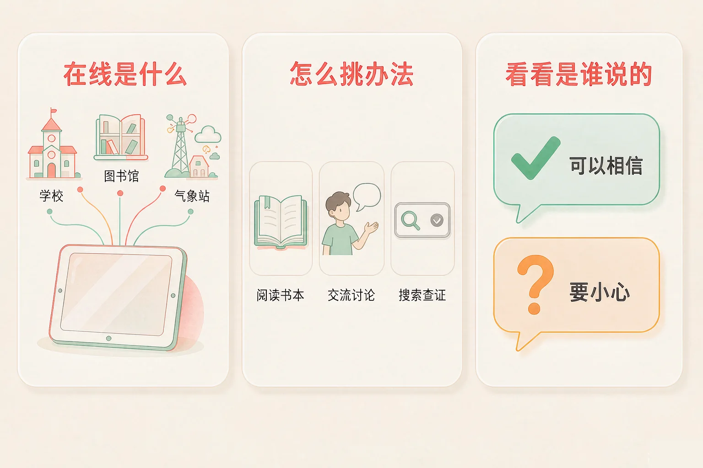
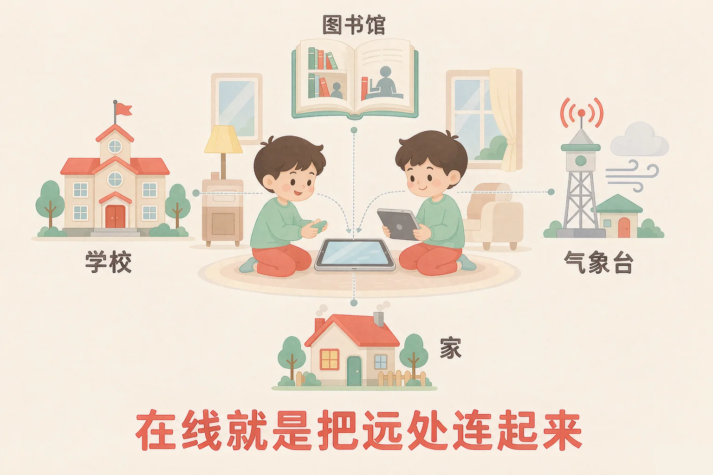
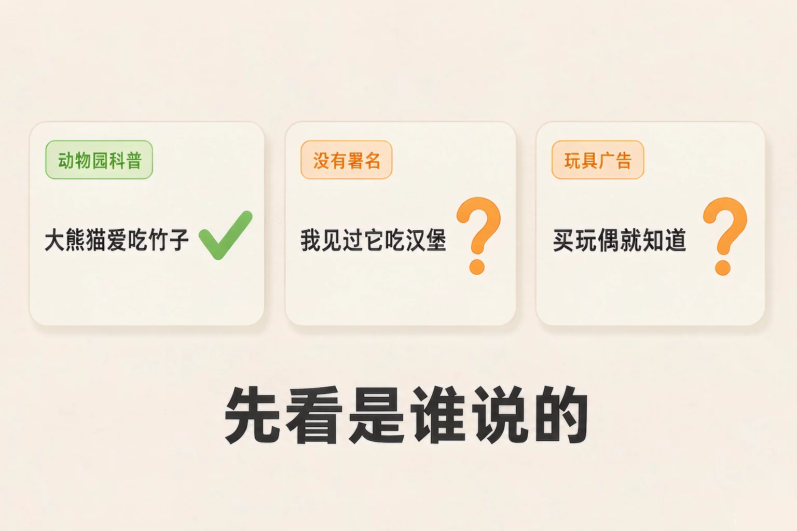

Gallery
v1.0.0 · skill v7.22.0
小学一年级 · 在线社会与信息表达
想知道明天要不要带伞，你会去问谁？

选一个你真正好奇的问题，后面的动手活动都会围着它转。
选择或输入后，这节课会围绕你的问题展开。
先凭直觉选一个，选完立刻看到解释——错了也没关系，正好知道要重点听哪里。
1. 想知道明天会不会下雨，下面哪个办法最合适？
天气预报是专门回答这件事的，气象台每天发布。错因提醒：常见错误是把「能上网搜」当成万能办法，其实先想清楚这件事该由谁来回答，才是第一步。
2. 网上搜到「鸵鸟会把头埋进沙子」，你接下来应该做什么？
看到答案先看来源。这句话其实是流传很广的错误说法，鸵鸟并不会把头埋进沙子。错因提醒：很多同学误认为排在搜索结果前面的就一定对，其实顺序不等于可靠。
3. 同桌家的门牌号，可以拿到网上去搜吗？
别人家的住址、电话都属于个人信息，不该打听、不该传播。错因提醒：不要误认为「网上能找到」就等于「可以去找、可以说出去」，这两件事完全不一样。
为什么要学这一课？
我们已经知道，想知道一件事，可以问身边的人，也可以翻书（And）；但有些问题身边没人知道，书上也一时找不到（But）；所以我们要学会在线去获取信息，还要学会挑一挑再相信（Therefore）。
一句话：在线，就是用网络，把你在的地方和远处连起来，让你不出门也能看到外面的信息。
在线能做的事
查天气、看地图、和外婆视频、在图书馆网站上找书。
不在线也能做的事
问身边的人、翻一翻书、动笔写下来、面对面说说话。

🔍 深层理解 换个角度再看一遍这件事，看看能不能说出背后的原理。
看见它：家里、学校、图书馆、气象台，本来是分得远远的，接上网络以后，它们就像被一根根线牵在了一起。
解释它：为什么在线能拿到远处的信息？因为信息可以被送出去、又被接回来——你发出一个请求，远处的电脑把答案送回来给你。
迁移它：同一个问题，往往有好几条路：问人、翻书、上网。会挑路的人，才最省时间。
先点左边的一件事，再点右边你觉得最合适的办法。挑完立刻能看到理由。
先点一件事，再挑一个办法。
在网上找答案，其实只有三步。第三步最重要：挑一挑。

很多同学误认为搜索结果排在最前面的就是最对的。其实排在哪里，和说得对不对是两件事——先看来源，才不会被带偏。
三条结果都在说「大熊猫吃什么」。先读每一条的来源，再选一个按钮。
来源：市动物园的科普网页
大熊猫最爱吃竹子，也吃竹笋和苹果。
来源：一条没有署名的留言
大熊猫其实最爱吃汉堡，我亲眼见过。
来源：一家玩具店的广告
快买这只熊猫玩偶，买了你就知道它吃什么啦！
三条都判断完以后，你会发现：决定信不信的，是来源，不是字数，也不是语气有多肯定。
题目：小明明天要去学校，他想知道要不要带伞。请你帮他一步一步想清楚。
有的同学一打开搜索框，随手打两个字，看到第一条就照着做。这条路的错在跳过了第一步和第三步：既没想清楚要问什么，也没看答案是谁说的。用八个字记牢：先想清楚，再看来源。
先凭直觉选一个，选完立刻看到解释——错了也没关系，正好知道要重点听哪里。
1. 下面哪句话说得对？
在线只是办法中的一个，问人、翻书也是好办法。错因提醒：把「能上网」当成「只有上网」，是这一课最常见的错误想法。
2. 同一件事，搜出来的两条结果说法不一样，你应该：
判断可靠不可靠，看的是来源，不是长短。错因提醒：有人误认为写得长、写得热闹就更可信，其实没有署名的长句，反而更要当心。
3. 下面哪一件事，不应该拿到网上去问？
别人家的住址、电话属于个人信息，不该打听、不该传播。错因提醒：不要把「好奇」和「可以问」搞混——有些不该知道的事，就不去知道。
下面的四步被打乱了。请你按正确的顺序，一步一步点出来——排错了会给你一个提示。
我排出来的顺序
还没有排出第一步。
请点出你认为的第一步。
排完之后，说给同桌听：
这四步里，哪一步最容易被跳过？跳过以后会出什么问题？
再把它画出来：四个方框，用箭头连起来，就是一个流程图。
先凭直觉选一个，选完立刻看到解释——错了也没关系，正好知道要重点听哪里。
1. 你想知道学校图书馆周末开不开门，最合适的两个办法是：
学校网站和图书馆老师都是直接知道这件事的人。错因提醒：把问题丢给不认识的人，等回来的往往是猜的答案——常见错误是把「有人回我」当成「答案可信」。
2. 平板弹出一条消息：「点这里领游戏皮肤」。你应该：
陌生链接不要点，更不要转发。先告诉大人，是最稳的做法。错因提醒：很多人误认为「只是点一下看看」没关系，其实点开的动作本身就可能带来麻烦。
3. 同学让你把他家的照片发到班级群里，你应该：
别人的照片属于他的个人信息，发不发由他自己决定。错因提醒：不要把「群里人少」和「没有关系」搞混——只要没经过同意，发出去就是不合适的。
还要记牢一件事：别人家的住址、电话、照片，都是他的个人信息。不打听、不传播，这也是在保护我们自己。
给别人讲一遍：请用「在线、办法、来源」这三个词，说清楚你上周末是怎么查到一件事的答案的。
再动一动手：画出一条属于你自己的找答案小路线，四个方框连起来，每个方框里写一步。
三层练习，做完第一、二层就算通关；第三层留给愿意继续探索的同学。
⭐ 基础巩固（必做）
⭐⭐ 能力应用（必做）
⭐⭐⭐ 迁移挑战（选做）
左边是学它之前要先会的，右边是学会之后可以继续探索的，下面是同一领域的伙伴知识。
图谱正在加载：首次进入需下载知识索引（约 1–3 秒），加载完成后本行会自动消失。